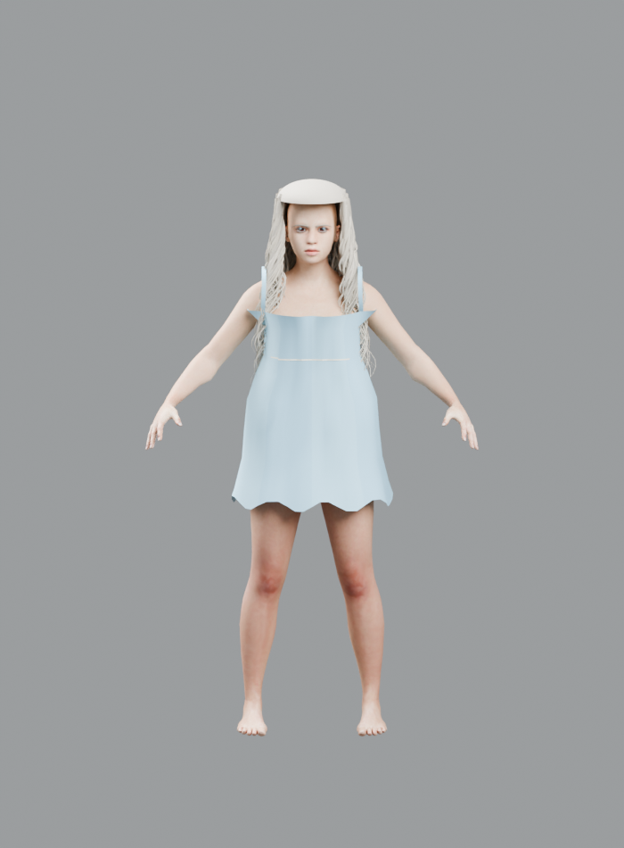

Drag to rotatePinch to zoomRigged MPFB testNo clothing · wavy platinum-blonde hair
Loading 3D character…
What this is: a separate adult MakeHuman/MPFB-generated character with wavy platinum-blonde hair, an unclothed full-body base mesh and a smaller, naturally softened bust profile. It has an articulated skeleton and four actual skeletal animations for standing, bending, kneeling, and hands-and-knees. The poses are for preview testing; they have not been verified as physically realistic. The model has NOT been verified as a calibrated measurements, and it is not plugged into gameplay movement yet. The existing Caitlyn character and world data have not been changed.
Show offline preview render

If the model fails on a mobile browser, try refresh once or download the GLB and open it in a separate 3D viewer. The first load may take a moment on cellular data.